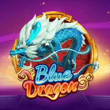
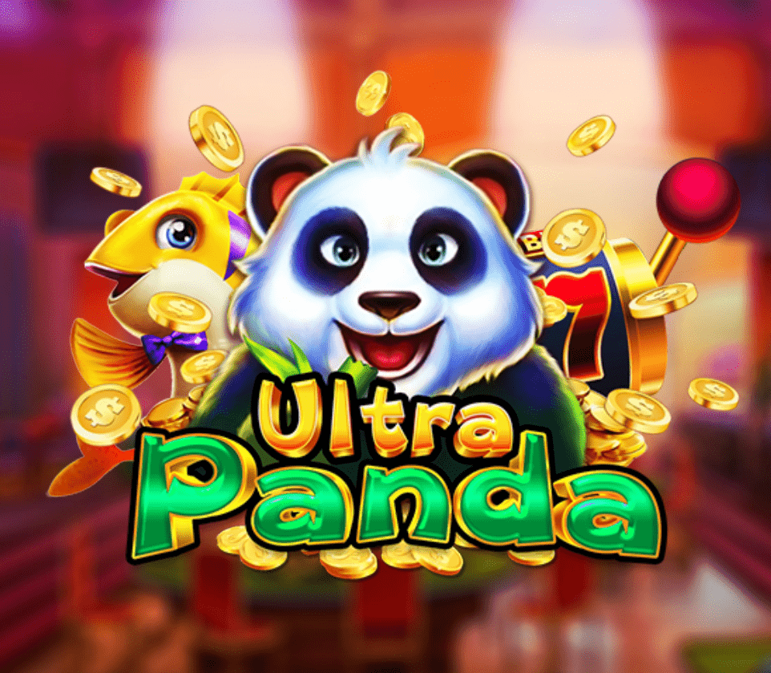
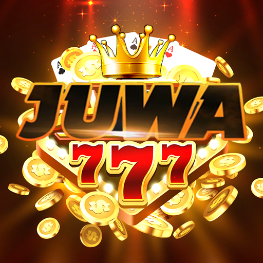

Explore top-rated social sweepstakes casinos that allow you to play your favorite games for a chance to win cash prizes!

BlueDragon
Play and win Sweeps Coins for cash prizes. Highly rated by users.
DoubleSlots
Get free Sweeps Coins to play your favorite games. Available in multiple states.
FireKirin
Play and win Sweeps Coins for cash prizes. Highly rated by users.
GameRoom
Get free Sweeps Coins to play your favorite games. Available in multiple states.
GameVault
Play and win Sweeps Coins for cash prizes. Highly rated by users.
VegasSweep
Get free Sweeps Coins to play your favorite games. Available in multiple states.
Vblink
Play and win Sweeps Coins for cash prizes. Highly rated by users.

UltraPanda
Get free Sweeps Coins to play your favorite games. Available in multiple states.
OrionStars
Play and win Sweeps Coins for cash prizes. Highly rated by users.
MilkyWay
Get free Sweeps Coins to play your favorite games. Available in multiple states.
Mafia
Play and win Sweeps Coins for cash prizes. Highly rated by users.

Juwa
Get free Sweeps Coins to play your favorite games. Available in multiple states.
What Is a Sweepstakes Casino?
Sweepstakes casinos provide a unique gaming experience to players in the US and Canada, where online gambling remains illegal in most states and provinces. The games played at these casinos look very similar to regular casino games, but the difference is that they are not played with real money.
Sweepstakes casinos work on a two-coin system, meaning that players use two types of coins or virtual currencies to play their favourite games. Players don’t need to use real money to play at sweepstakes casinos because they receive a certain amount of Gold Coins and Sweeps Coins as a part of their welcome bonus when signing up at a casino. Bets are only made in Gold Coins at sweeps casinos.
As players don’t use real money to play at sweepstakes casinos, they are not considered gambling sites, meaning they are entirely legal in the US. You do have the option to redeem your sweeps coins for cash prizes, but you should check the casino rules before making any requests.
History of Sweepstakes Casinos
To talk about the history of sweepstakes casinos, we should first touch on the history of sweepstakes in general, especially in the US. Even though we can date some kind of sweepstakes back to the early 20th century, they mostly gained popularity in the 1950s when some of the biggest brands in the US organised campaigns that led people to buy products with the prospect of winning a prize.
Those massive marketing campaigns involved valuable prizes, and all people had to do was purchase a certain amount of product, send proof and application forms through the mail, and potentially sweep a prize in the form of a car, exotic trip, or even cash.
With the introduction of computers and the Internet, sweepstakes also moved to the online space, giving companies a chance to reach more people. Participating in these sweepstakes campaigns became much easier, and the whole idea of online sweepstakes led to the emergence of online sweepstakes casinos as a legal alternative to real-money casinos.
How to Register at Sweepstakes Casinos?
The registration process at sweepstakes social casinos works pretty much the same as with any other casino, except that you don’t make any real money deposits but claim your welcome bonus in Gold Coins or purchase them in a pre-determined package. Here are the steps to follow when registering and playing at a sweepstakes casino:
Select a sweepstakes casino: All the casinos above are sweepstakes casinos you can play at, so feel free to choose the one you’d like to try. Note that we only list sweepstakes casinos on this page, and if you wish to play at a real money casino, you can visit our Casinos in the US or Casinos in Canada pages.
Register: Follow the steps listed on the casino website to register your account.
Claim a welcome bonus: Most casinos offer Gold Coins as a welcome bonus when you join them.
Buy Gold Coins: You can buy Gold Coins through gold coin packages, sometimes including Sweeps Coins as a free bonus gift. Gold Coins are not redeemable and are only used to play the games you choose at a sweepstake social casino.
Select a game: Choose a sweepstakes casino game you want to play.
Win Sweeps Coins: You can’t buy Sweeps Coins, but you can win them when playing Sweeps slot and table games. Sweeps Coins can also be won as a prize in social tournaments on social media.
Redeem Sweeps Coins for real cash prizes: Unlike Gold Coins, Sweep Coins are redeemable for real cash prizes.
How Does a Sweepstakes Casino Work?
As we’ve already mentioned, sweepstakes casinos don’t allow players to use real cash when making bets. Instead, every player receives a welcome bonus that contains Gold Coins (and some Sweeps Coins) when creating an account at a sweepstakes casino. Coins are later used to play the games they choose at the casino.
Players also typically get a bonus every day they log into their accounts, but if this amount of Gold Coins is not enough for you, you can purchase a Gold Coin package for a certain price, and the casino will throw in some Sweeps Coins as a bonus. All bets at a sweepstakes casino are made in Gold Coins, and you can win prizes in Sweeps Coins that can later be redeemed for real cash in accordance with casino rules. The games are pretty much the same as in regular casinos, except that they are not played with real money bets.
Sweepstakes Casinos vs. Real Money Casinos
The main difference between sweepstakes social casinos and real money casinos is that you don’t make any kind of money deposits when playing at a sweepstakes social casino. Instead, you claim your welcome bonus in Gold Coins or purchase this virtual currency in packages and play to win some Sweeps Coins you can later redeem.
Sweepstakes casinos are not gambling sites. They allow users to play the same games as players in regular online casinos but without making any real money deposits. Sweepstakes casinos are essentially free, but you can choose to buy Gold Coins virtual currency if you wish and then play the games using those tokens. Sweepstakes online casinos are as safe as regular ones, and you just have to make sure you choose one of the legit and regulated sweepstakes casinos.
Gold Coins vs. Sweeps Coins
As mentioned, Gold Coins and Sweeps Coins are the two digital currencies or tokens used in sweepstakes social casinos. Some casinos have their own versions of these coins and have other names for them, but their use remains the same.
Gold Coins are used to play casino games at social casinos for free. Players can get them as a welcome bonus when they sign up at a casino or purchase them through gold coin packages. Should you decide to purchase Gold Coins, you can use any available payment method that the casino lists on the website for the purchase, like debit or credit cards, e-wallets or other methods. Gold Coins are not redeemable for cash prizes.
When players win at a sweepstakes casino, they get Sweeps Coins. These coins can also come as a part of the welcome bonus or as a gift when a player purchases a Gold Coins package. You can also obtain Sweeps Coins by participating in social tournaments or giveaways. Sweeps Coins are redeemable for real money prizes, and you should check the casino’s redeeming requirements before signing up if you wish to redeem your potential winnings.
Note that Gold Coins and Sweeps Coins are only used in sweepstakes and social casinos that don’t allow any real-money betting or gambling.
What Prizes Can You Earn at Sweepstakes Casinos?
The prizes you earn at sweepstakes casinos come in the form of Sweeps Coins. You can win Sweeps Coins when playing available online games at a sweepstake casino of your choice. Much like with other casinos, you get a welcome bonus when you sign up, and later when you log in to play, you get your daily bonus. Make sure to check the casino bonuses on the casino website before signing up, so you would know what to expect.
Slot games that you play at an online sweepstakes casino offer similar bonus features to any other casino, so you can potentially win a jackpot if the game you choose to play offers that feature. The jackpot will also be paid out in Sweeps Coins you can later redeem under the casino’s terms and conditions. Casinos have the minimum amount of Sweeps Coins you can redeem, and the redemptions are sometimes limited to one per day, so make sure you have read and understood all the casino rules before redeeming your Sweeps Coins.
Pros and Cons of Sweepstakes Casinos
Sweepstakes social casinos have their pros and cons, just like all other types of casinos. Some characteristics are the same as with regular online casinos, with most of them being optimised for mobile casinos and devices. The games offer the same thrills to all players, regardless of the currency they are using. Here are some pros and cons of sweepstakes casinos:
Pros:
Available to some players who can't use traditional online casinos (mostly in the US and Canada)
Socialisation, especially in social media tournaments and giveaways
Opportunity to win real cash prizes without spending any cash
Opportunity to win real cash prizes without spending any cash
Cons:
Unsuitable for high rollers
Game selection could be a bit smaller than with real-money casinos
How to Choose the Right Sweepstakes Casino
First of all, you should know that the sweepstakes casinos we list on our website are legit and safe to play at, just like other regular casinos. When choosing an online sweepstakes casino to open an account with, you should first pay attention to a few details:
Is the casino available in your country/state?
Does it offer the games you’d like to play?
What kind of bonuses does the casino offer?
If you wish to redeem your potential Sweeps Coins prizes, can you use any of the available payment methods?
Other players’ opinions and reviews can also give you some additional information about the casino you wish to play at, so you can make an informed decision more easily. If you only want to play for fun, then you won’t care much about payment methods to use to redeem Sweeps Coins, but you will care about the game selection. If you prefer to play your favourite games on the go, then you need a casino that is fully optimised for a mobile gaming experience.
You can find most of this information on the casino website, and you can always check out our casino reviews for additional info on the casino and an unbiased expert review. By doing so, you ensure that you have chosen the best sweepstakes casinos to play at and have fun.
Bonus Offers at Sweepstakes Casinos
A sweepstakes casino no deposit bonus looks pretty much the same as a regular casino no deposit bonus. When you sign up with a sweepstakes casino, you receive a certain amount of Gold Coins to play your favourite casino games and potentially some Sweeps Coins as well. A bonus can also come in the form of a discounted offer to purchase a Gold Coin package.
Sweepstake casinos bonuses can also come in the form of daily login bonuses, referral bonuses, promotions, Wheel Spin, giveaways, and tournaments, among others. Look for no deposit sweepstakes casinos to find and compare the best offers currently available. Sweepstakes casinos update their bonus offers regularly, so don't forget to check updates.
Have you tried any of these bonuses? Head to our dedicated forum thread and share your thoughts with fellow players looking to test them out.
Where Are Sweepstakes Casinos Legal?
Since sweepstakes casinos don’t require cash bets to allow players to play games, they are not considered gambling sites, as we have mentioned many times already. Players can play these games for free because they receive a certain amount of coins through bonuses. That’s why sweepstakes casinos are legal in most US states, even though online gambling is only legal in a few right now.
Just as you can’t make bets using real money, you also can’t win cash prizes, which is another proof that sweepstakes, in their essence, are not gambling sites, and if state laws don’t ban them specifically, they are considered legal in most states.
Sweepstakes casinos comply with US sweepstakes laws, which means that they don’t need any gambling licences and are not subject to gambling laws.
Why Are Sweepstakes Casinos Popular?
Players in the US don’t have the option to play online casino games in many states. As a matter of fact, online casinos are only legal in Pennsylvania, New Jersey, Michigan, and West Virginia right now. In other states, sweepstakes casinos provide an opportunity for iGaming enthusiasts to enjoy playing their favourite casino games legally.
Another thing that contributes to the popularity of sweepstakes casinos is the fact that players don’t need to spend any money to play because they get their coins through casino bonuses. Of course, that also means that sweepstakes casinos are not suitable for high rollers, but players that want more coins can purchase them in Gold Coin packages. However, these casinos are still considered to be low stake casinos.
Last but not least, sweepstakes casinos are available in almost every state, so chances are that most US players can create their own accounts and start playing their favourite sweep games.
Frequently Asked Questions
What are the odds of winning at a sweepstakes casino?
The odds of winning at a sweepstakes casino are pretty much the same as at any other online casino. Casino games work on the principle of Random Number Generators, and all the wins happen randomly. Note once again that you play with the sweepstakes two-coin system, and the wins are in the Sweeps Coins that can later be redeemed for cash prizes.
What is the house edge at a sweepstakes casino?
Sweepstakes casinos work on the same principle as regular casinos, except that players can’t bet real money, meaning that the so-called house edge on casino games is also similar to the one in regular casinos.
Are there any fees to play at a sweepstakes casino?
There are no fees that players need to pay to play at a sweepstakes casino. Each player gets Gold and Sweeps Coins as a welcome bonus without making any purchase, but they do have the option to purchase Gold Coin packages if they wish to play more than their welcome bonus allows.
What is the maximum amount that can be won at a sweepstakes casino?
There is no limit to the amount of Gold or Sweeps Coins you can win at a sweepstakes casino, but there could be a limit to the amount of Sweeps Coins you can redeem. First of all, you should check the laws in the state where you want to play, as some states limit the sweepstakes casino cash prizes, and then check the casino rules.
Who operates the sweepstakes casino?
Social and sweepstakes casinos operate under the US sweepstakes laws. That means sweepstakes casinos don’t require a gambling licence from any gambling commissions to operate as they are not considered gambling sites.
Who is the target audience for the sweepstakes casino?
Sweepstakes casinos are attractive to players who enjoy playing the games casinos offer without paying any money. Playing with the two-coin system allows the players to relax and enjoy the social aspect of the games without the pressure of potentially losing money. The game software in sweepstakes casinos is similar to regular casino games, so sweepstakes casino games also appeal to gaming enthusiasts in the states where online casinos are illegal.
Can you play sweepstakes with real money?
The short answer to this question is no. You can use real money to purchase additional Gold Coin packages, but you can’t use real money to play at a sweepstakes casino.
What casinos use Sweeps Coins?
Sweepstakes casinos use Sweeps Coins. Casinos sometimes name them differently, usually to match the name of the casino. You can use Sweeps Coins to play your favourite games and potentially redeem them for a cash prize.
How do I know if a sweepstakes casino is legitimate?
If a casino allows you to play without requesting any real money deposits, that’s a clue that the casino is a sweepstakes casino. You should check the casino website to ensure it is regulated in the state where you want to play. The list of sweepstakes casinos on this page are checked by our experts and chosen for you as 100% legit and safe to play, so you have nothing to worry about when choosing one of them. The list is constantly updated with new sweeps casinos, so you won’t miss anything if you check this page regularly.
Is sweepstakes casino legal?
Sweepstakes casinos are legal in most US states and some Canadian markets. Sweepstakes casinos are not considered to be gambling sites.
What are the sweepstakes in gambling?
Sweepstakes casinos are not considered gambling sites and therefore don’t need a gambling licence to operate. Sweepstakes casinos are an alternative to regular gambling sites, and they use a dual coin system instead of cash.
Do sweeps slots pay real money?
Sweeps slot games don’t pay real money prizes, just like they don’t allow any real money bets. You can win sweeps coins when playing sweeps slots and later redeem them for cash prizes if the casino allows that.
What is the best sweepstakes casino?
We have listed Funrize, WOW Vegas and Stake.us casinos as some of the best sweepstakes casinos in the US. All the casinos we list on this page are verified and safe to play at, so you can choose the one that appeals the most to you when looking at the game and bonuses selection.